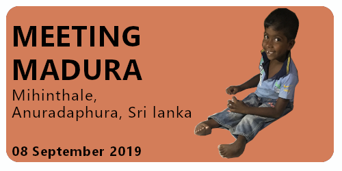
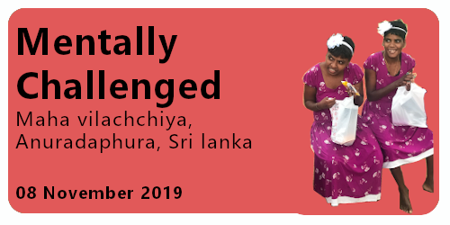
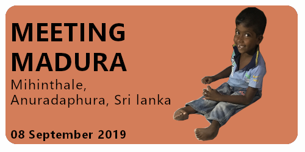
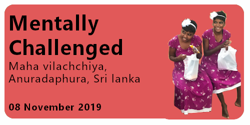
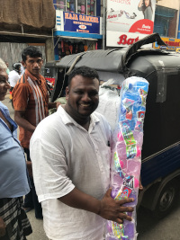

"If you're not making someone else's life better, then you're wasting your time. Your life will become better by making other lives better."

 



About the project
As per the direction and guidance received from Suranga Udayakumara , the founder of the "Soduru Hadawath"(Beautiful Hearts) movement, as well as through the generous contributions received from friends and families, I managed to get involved in setting up a Tube well to a remote villege in Kebithigollewa, Anurdhapura, Sri Lanka.
It is estimated that the project would signficiantly uplift the livelihood of more than 85 families as previously they had to walk, on average, 2-3kms on a daily basis to collect water-The pictures show how deligted these poor villegers were knowing that their wishes were getting fullfilled. The severe drought weather conditions that is typically seen in these parts of island has further agrevated these conditions. It is also estimated that the tube well would supply approximatly 3,000-4,000 litres of water, daily, to these villegers.
Genrous Contributors:
- Chanka Dassanayake
- Udana Siriwardena
- Suranga Waduge
- Chaminda Jayawardena
- Janaka Edirisooriya
- Madara Dassanayake
- Shreen Abeysekara
- Mangala Wanniarachi
While we were visiting the villege, we also met this child and his mother (as shown in images 3 and 4) where the child has been disabled since birth unable to walk. As per the mother the kid has succumbed to this situation due to folic acid deficiencies, a deficincy that many of the villegers suffer due to the lack in the quality of water they consume. Hope projects of this nature will provide, at minimum, some relief to these poor villegers to enjoy a healthy life free from such misforuntues.
In addition to the above, I also got involved in donating a wheelchair to a poor mother in the villege.
Some of the captured moments...


About the project
Through donations received from my good friend Adeline and her friends from France, managed to give some relief to these poor villegers in rural areas in Sri lanka by supplying dry rations.
In addition to arranging the above donations, I also had the opportunity to get some first-hand experiences of the dire conditions under which these villegers are living.
Hopefully, we will find more sponsors like Adeline to support families to provide them with better livelihoods and living conditions.


Project Name: Meeting Madura
Project Location: Kekirawa - Mihintale - Anuradhapura District - Sri Lanka
Project Date: 08 Sep 2019
We left Colombo early morning to reach a town called Kekirwa, a town 180kms from the city of Colombo in the north-central province of Sri Lanka, where we were coridally welcomed by a crowd of villegers. These poverty-stricken villegers (approximately 50 families) were specificially selected from the surronding villeges like Gonapathirawa, Yaya 7, Yaya 9, Dummalawewwa, Ipologama as they were adversely affected due to a sudden loss of a breadwinner in their families. These families were provided with dry ration parcels and the donations for the event was coordinated by a generous group of students.


I was introduced to this mother(see below) who lost her husband few weeks ago due to a tragic lorry accident. She was weeping tears telling us about her situation as she now has to face difficulties to look after her two kids with one kid just being one and half month old! The lost of her husband is a big loss for the family as he has been the main breadwinner for the family. I got involved in providing them with dry rations sufficient for few months giving a slight relief to this poor mother. Suranga, my partner, made a clip of the family to be shared in social media to find a suitable party to request for a monthly scholorship for the kids.


Met this family (see below) who lost their mother due to a germ infection. Since the lost of her mother, the Kids were sleeping on floor as they had to dispose the mattress their mother was sleeping after her infection. My good friend, Keshan De Silva, genrously supported to provide them with a new mattress and pile of pillows. Although small in size, these actions always leaves me with a great sense of happiness and purpose.


We were now litterly starving to death as it was well pass noon; The scorching heat too was making a heavy toll on us. After having our meals in lotus leafs, we quickly moved to the next event - opening of the Tube well to the villegers in Kabthigollawa. The images below show how exciting the villegers were to welcome us “In my own lifetime this is the first time that I am seeing running water from a tap. I’m so happy. I no longer have to tread nearly three to four kilometers of road to fetch water,” says a villeger her voice choked with emotions. Until now, she and other villegers had to repeat their trips to fetch water up to three times a day.


The day was almost approaching the sunset and we drove ourselves to this home of mentally disabled children in Anuradhapura. We spent the late evening with them and offered them dinner and distributed clothes. The moments I had with them were extremely heartfelt where I often wondered what their lives was without parents, without love and without someone to guide them. Seeing those children, with sporadic resources, made me appreciate the copious amounts of things we had and sometimes, took for granted.


The day was almost coming to an end where we were finally on our way to meet Madura in Mihintale, the kid who we met during our last visit who was born paralyzed unable to walk. We were able to arrange the kid a monthly scholarship for his education and also offered them help to find medical assitance. Madura was delighed to see us at his place and seeing his smile I realized something very important about myself - the feeling of sharing and giving joy gives me a feeling of elation.


Project Name: School Supplies
Project Location: Maha Vilachchiya - Anuradhapura District - Sri Lanka
Project Date: 08 Nov 2019
It was my fourth visit to the district of Anuraphaura during this year 2019 and this time I was traveling with my good friend Tharaka. All the events that we were planning to attend during this particular day were organized by Suranga Udayakumara , the founder of the "Soduru Hadawath"(Beautiful Hearts) movement.
 It was through my brother that I was first introduced to Suranga and ever since our very first meeting in July 2019, I was able to build a close relationship with Suranga that had enabled me to understand some of the worst hardships that these poor communities in Sri Lanka are undergoing. As per Suranga, since the start of his movement about two and a half years ago, he had collected more than 100Mn Sri Lankan Rupees (Approx 560k USD) into various social projects primarily through his foundation's Facebook page - not an easy feat by any standards. What is even more inspiring is that he still continues to use a basic Nokia mobile phone to coordinate this gamut of work and yet making certain that these mega projects are delivered as smoothly as possible. Suranga was born to a poor family in the district of Anuradhapura in Sri lanka where at the tender age of 5 he had to face an unfortunate injury where he had lost all the toes of his right foot from a burn thus causing him difficulties in walking. Despite all this misfortunes he had to face since childhood, Suranga had not given up on his hopes and today he is working as an associate engineer for a road construction company in the District of Galle in Sri Lanka. Going beyond personal accomplishments, Suranga continues to amaze and motivate me by his sheer passion and dedication towards supporting and uplifting the poor communities in Sri Lanka. When asked if he ever wishes to get in to Sri Lankan Politics, Suranga with his humble smile replies me by saying, "No Sir, my only motivation is to really help these poor people and to bring a smile to their faces."
We left pretty early in the morning in order for us to be on time to attend the first event which was a donation of school supplies to 100 selected students from the surrounding areas of Kuda-Halmillawa in Maha-Villachiya in the Anuradhapura District. During the previous week, I met with Suranga in Pettah, Colombo's biggest, most chaotic and crowded market space, spending our morning hours sorting the purchasing of the school bags at highly concessionary prices from the generous funds we received from Tharka De Alwis. The children were primarily selected as they had lost either or both their parents thus were facing difficulty in finding sufficient means to sponsor for their school supplies. The smiles of these children shows how delighted and excited they were to welcome us and receive their school packs. On our way to the next event, I was also told by Suranga that the one of the biggest issues these villagers face beyond poverty is the risk of wild elephant attacks - although one could see electric fences planted around these villages, elephants continue to destroy these fences and invade the villages.


 As almost all the donation events for this year were carried out in the District of
Anuradhapura, I felt the need do some research in order to provide some context about this area
to my readers. The District of Anuradhapura is situated in the North Central Province (NCP) of
Sri Lanka and carry with itself some of the most important historical aspects of Sri Lanka.
Anuradhapura District was the first capital of Sri Lanka and is divided into 22 Divisional
Secretary Divisions as illustrated in the map. With a Population of 856,399 as per the latest
census of population and housing in Sri Lanka, Anuradhapura District has a poor population of
33,140 which accounts for a poverty head count index(HCI) of 3.8 - A ratio that does not appear
to be alarming when compared to the national HCI average of 4.1. The area is also dominated by
farmers with a heavy focus on paddy cultivation and other cash and catch crops such as Chiles,
Onions, Ground nuts, Soya beans, Green gram, Cow pea, Sweet Corn and many dry zone crops and
vegetables.
As almost all the donation events for this year were carried out in the District of
Anuradhapura, I felt the need do some research in order to provide some context about this area
to my readers. The District of Anuradhapura is situated in the North Central Province (NCP) of
Sri Lanka and carry with itself some of the most important historical aspects of Sri Lanka.
Anuradhapura District was the first capital of Sri Lanka and is divided into 22 Divisional
Secretary Divisions as illustrated in the map. With a Population of 856,399 as per the latest
census of population and housing in Sri Lanka, Anuradhapura District has a poor population of
33,140 which accounts for a poverty head count index(HCI) of 3.8 - A ratio that does not appear
to be alarming when compared to the national HCI average of 4.1. The area is also dominated by
farmers with a heavy focus on paddy cultivation and other cash and catch crops such as Chiles,
Onions, Ground nuts, Soya beans, Green gram, Cow pea, Sweet Corn and many dry zone crops and
vegetables.
Our next visit was to a home for mentally challenged children in the city of Anurdhapura. As per the keepers of this home, the home hosts more than 30 children at any given time and receives a nominal amount from the government but this amount seems rarely sufficient to provide a reasonable service to these children. I was also told that as these children are mentally disabled, they tend to get sick quite frequently and hence requires continuous medical attention. But using public transport to get them to the nearest medical provider is an obstacle as it's not common that a bus driver or a trishaw driver would accommodate a need for a children in this state of mind due to the possible menace they would cause to the fellow passengers or to them. The keepers envisage if the home could find some sponsorship's to buy a trishaw - even a used one - that this could possibly bring a lot of relief to the children as well as to the keepers of this home.


 As the day was almost approaching dusk, we were finally heading to our final stop for the day to
meet Ram Mama and his family in Parasangaswewa which was just 20 Kms from the Anurdhapura town. Ram
Mama had apparently carried water to the whole village for many years before finally the village had
water flowing from their taps but now standing in front of us, Ram Mama appeared sick and feeble
unable to even to take care of his own family. Suranga had made arrangements to provide Rama Mama
and his family with a couple of mattresses but the main purpose of the visit was to make a short
video
clip to be published in Facebook to pledge for donations to build a small house to Rama Mama and his
family.
As the day was almost approaching dusk, we were finally heading to our final stop for the day to
meet Ram Mama and his family in Parasangaswewa which was just 20 Kms from the Anurdhapura town. Ram
Mama had apparently carried water to the whole village for many years before finally the village had
water flowing from their taps but now standing in front of us, Ram Mama appeared sick and feeble
unable to even to take care of his own family. Suranga had made arrangements to provide Rama Mama
and his family with a couple of mattresses but the main purpose of the visit was to make a short
video
clip to be published in Facebook to pledge for donations to build a small house to Rama Mama and his
family.

{kind=link}
{kind=link}
{kind=link}
{kind=link}
{kind=link}
{kind=link}
{kind=link}
{kind=link}
{kind=link}
{kind=link}
{kind=link}
{kind=link}
{kind=link}
{kind=link}
{kind=link}
{kind=link}
{kind=link}
{kind=link}
{kind=link}
{kind=link}
{kind=link}
{kind=link}
 On my way to Colombo, despite feeling that extreme fatigue and exhaustion, I was feeling highly
energized with extreme feelings of deep happiness and excitement that I could never imagine that I
would get through any material successes - a feeling that one would typically get by knowing that
they had carried out a deeper responsibility as a human being by unconditionally and sincerly helping and
uplifting another human being.
On my way to Colombo, despite feeling that extreme fatigue and exhaustion, I was feeling highly
energized with extreme feelings of deep happiness and excitement that I could never imagine that I
would get through any material successes - a feeling that one would typically get by knowing that
they had carried out a deeper responsibility as a human being by unconditionally and sincerly helping and
uplifting another human being.